An Augmented Reality Training Solution for the University of Winchester
Reducing staff workload and improving student access to camera training through AR simulation.

Overview
The University of Winchester’s Multimedia Centre provides training and short‑term loan access to cameras, lighting, and sound equipment. High demand for in‑person training, especially during semester spikes, results in long wait times and heavy staff workload. This project explores how an augmented‑reality mobile application could support asynchronous training, reduce pressure on technicians, and improve accessibility.
Problem
A reliance on in‑person training for camera equipment has resulted in long wait times due to high staff workloads.
Training bottlenecks occur during semester transitions, limiting student access to equipment and delaying project work.
Proposed Solution
Prototype an augmented‑reality mobile application which can:
- Be operated by students without the presence of a technician
- Enable asynchronous training
- Include accessibility features that promote equity
- Provide a proof‑of‑concept to secure further funding
Research
A spike in training demands, especially with new students, could overwhelm staff.
The University did not collect training booking data, but camera loan data revealed seasonal spikes aligned with semester calendars. These spikes imply increased training demand and reduced equipment availability for training sessions.
- Camera loans increase steeply between September–October and January–February.
- Training demand likely mirrors these spikes.
- Equipment availability for training is reduced when items are already loaned.
This suggests AR training could reduce pressure during peak periods.

Insights
Focus groups highlighted several potential benefits of using a simulation for training.
Focus groups with technicians and training staff identified pain points across the entire training process. These were synthesised into an affinity diagram.
Key opportunities:
- Asynchronous training provides flexibility for students.
- Simulation removes set‑up and pack‑down time.
- Administrative duties could be reduced through automated assessment.
- AR can safely demonstrate “what happens when things go wrong.”
Pre‑Training Administration
- Lack of online learning resources
- 1:1 training inefficient with large cohorts
- Admin for training requests is time‑consuming
- Timetabled sessions clash with lectures
Preparing for Training
- Training preparation is time‑consuming
- Preparation wasted due to non‑attendance
- Slow student responses reduce equipment availability
The Training Session
- Students sometimes passive
- Difficult to demonstrate some equipment
- Students not always happy to attend in‑person
- Training takes resources away from projects
Assessment
- Paper forms present GDPR concerns
- Paper forms not always appropriate
- Students feel pressured to sign forms
- Assessment can feel awkward
Post‑Training
- Time-consuming
- Inefficient filing system
- No revision materials available
Personas
Four student personas identified varying engagement, confidence, knowledge, and attitude levels.
Focus group data produced four personas representing different levels of confidence, prior knowledge, and attitudes toward training.

Jack, the Eager Beaver
Proactive, meticulous, expects high‑quality training.

Tom, the Crew Member
Practical, collaborative, prefers clarity and online research.

Sam, the Steady Learner
Finds equipment challenging, relies on peers, hesitant to ask staff.

Marina, International Student
Assertive, prefers individual training to overcome language barriers.
Content Audit
An audit of similar AR applications revealed design patterns that enhance usability and accessibility.
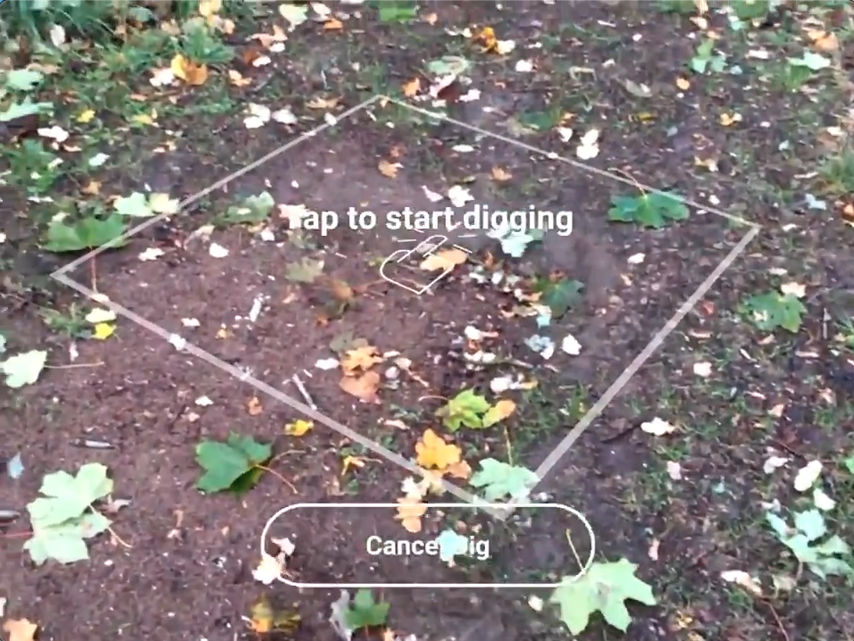
- Overlaid UI provides instruction but translucent buttons reduce accessibility.
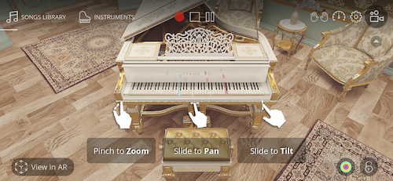
- Contextual prompts and visible tap targets improve clarity.
- Navigation elements mimic OS patterns, improving recognition.
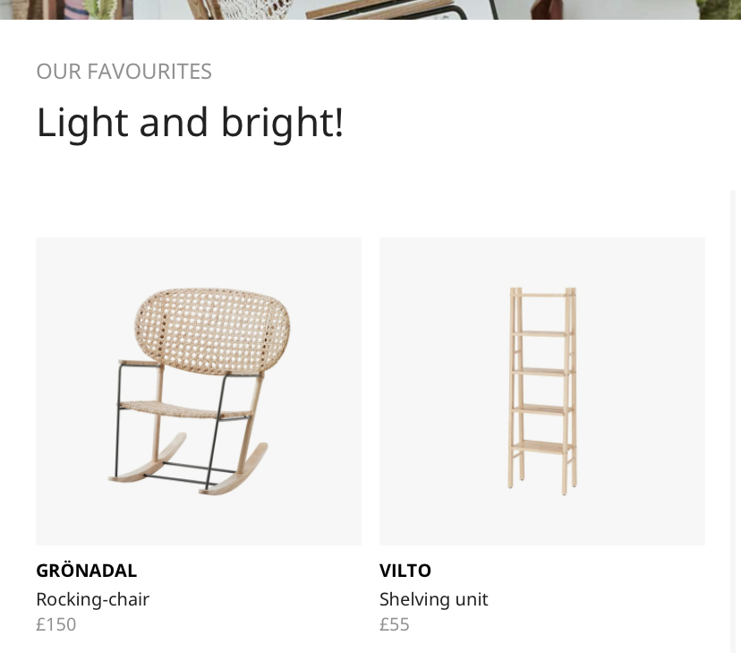
- Drawers of placeable objects match real‑world expectations.
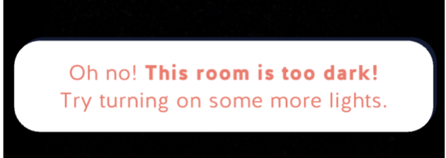
- Error messages provide recovery instructions.
Academic Research
A ‘Freeze Frame’ function could increase accessibility for students experiencing motor or cognitive impairments.
Thematic analysis of AR accessibility research highlighted “Freeze Frame,” allowing users to pause the AR experience and inspect the display comfortably.
“Aiming cameras non‑visually is… magnified when the position must be held stable while also interacting with the mobile device.” (Herskovitz et al., 2020)
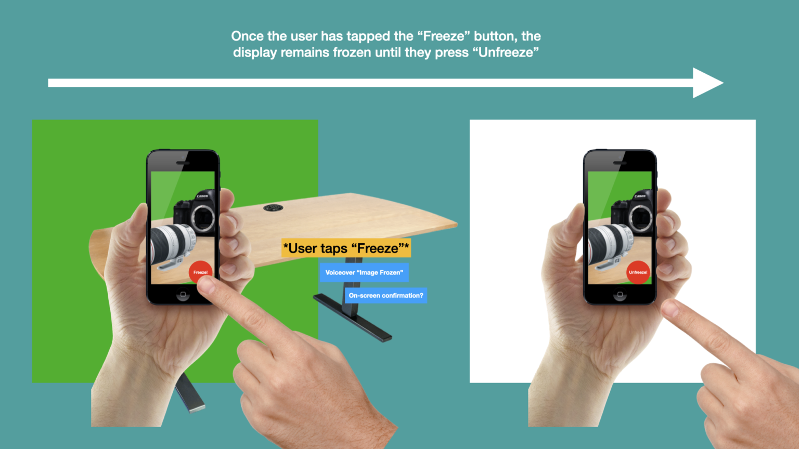
Application Task Flows
Two mandatory task flows formed the basis of design and testing.
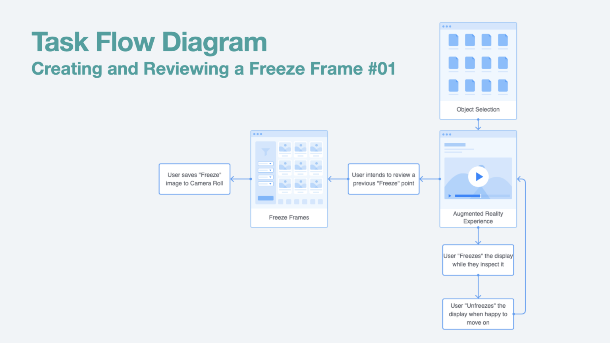
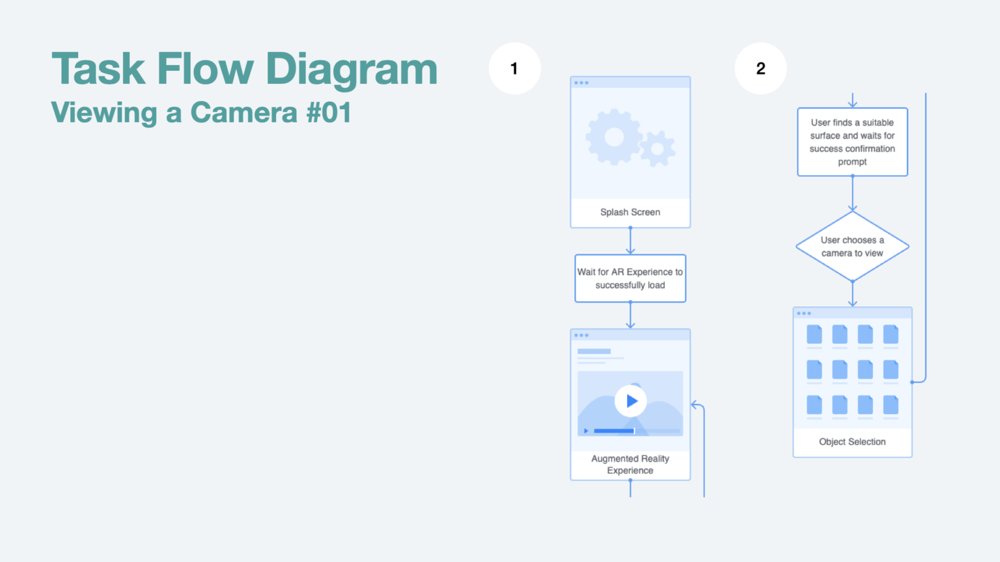
Ideation, Storyboarding & Sketching
Sketches were developed iteratively with staff and student feedback.
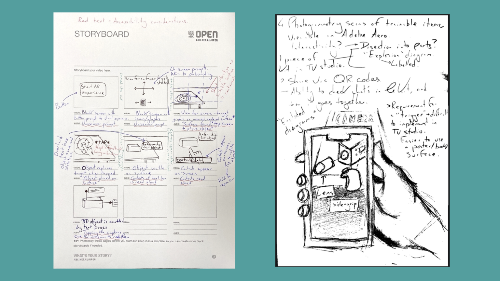
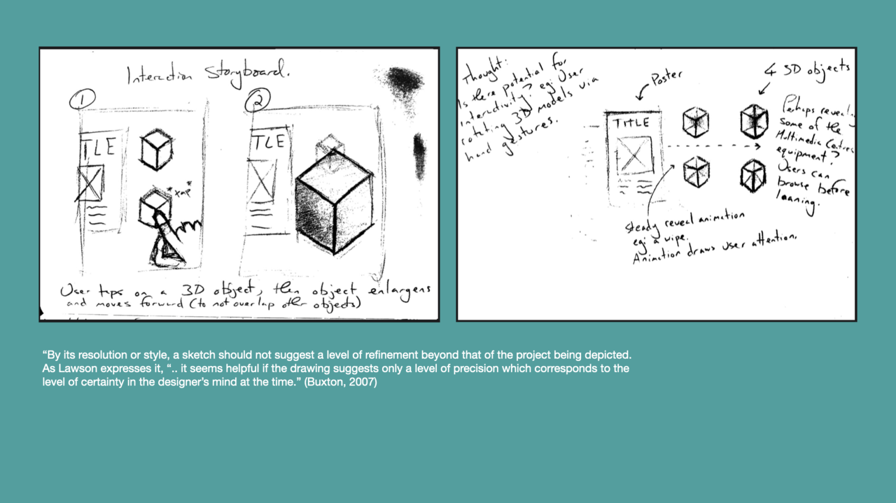
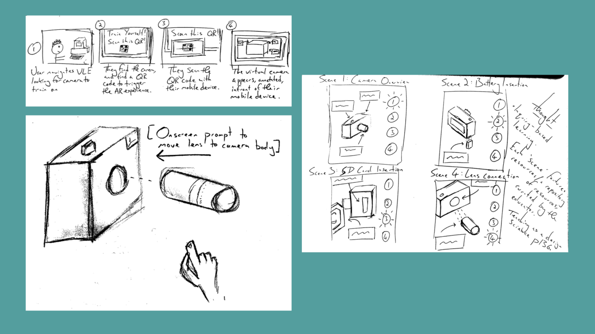
Wireframing & Interaction Design
Wireframes explored navigation, object drawers, tab bars, and interaction concepts.
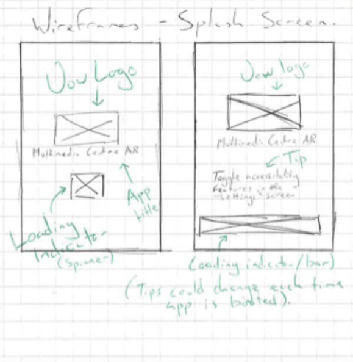
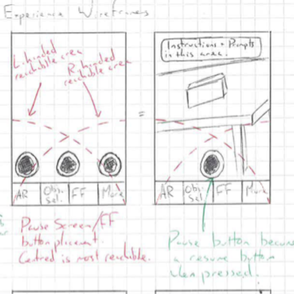
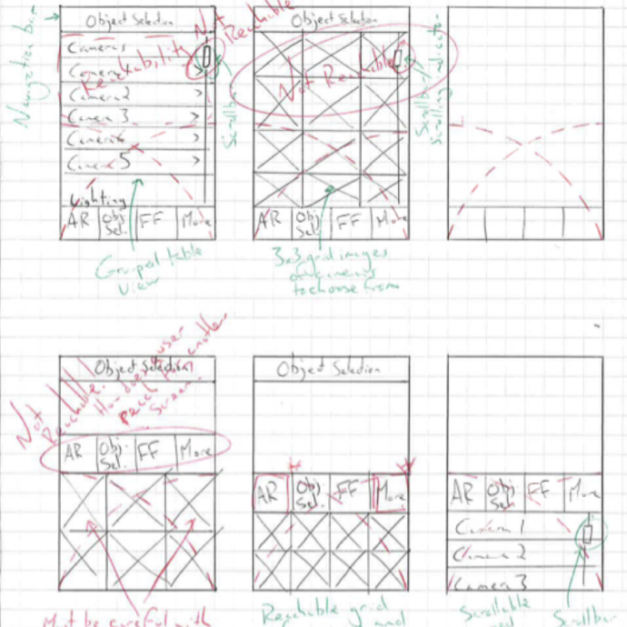
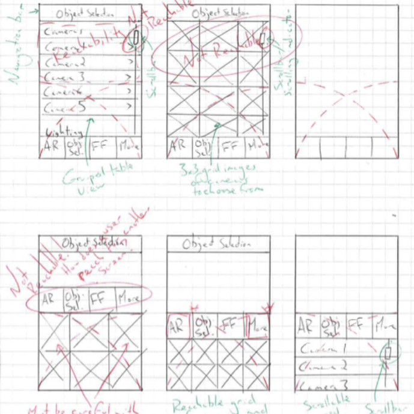
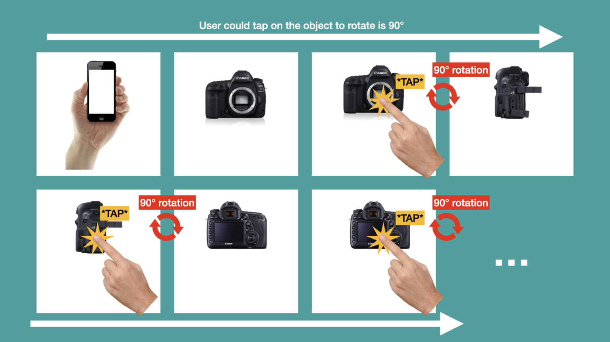
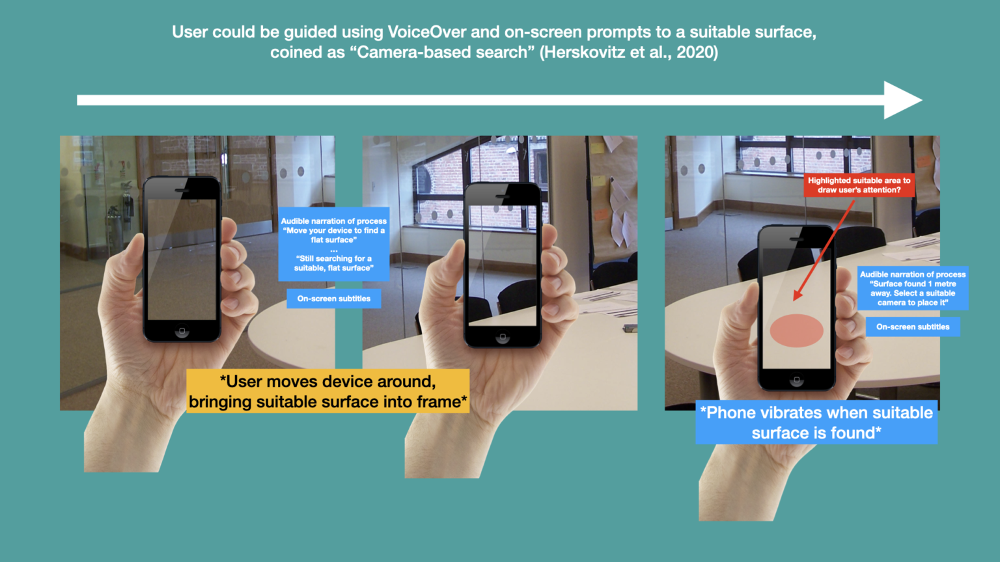
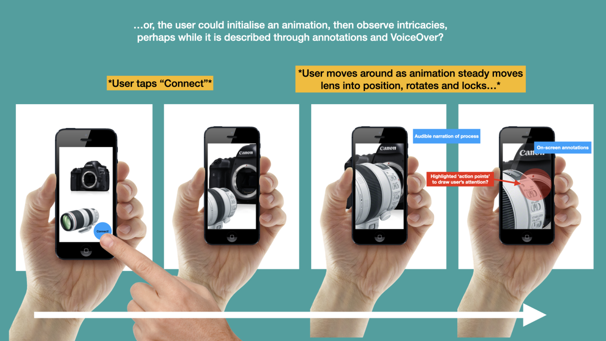

Paper Prototyping & Usability Testing
Test participants easily navigated using the tab bar, object drawers, and toggle switches.

Think‑aloud testing covered:
- Viewing a camera
- Creating and reviewing a Freeze Frame
Scenario: Students launched the app for the first time, explored features, viewed two cameras, and saved their first Freeze Frame.
Usability Testing Outcomes
- Misunderstanding of visual elements: Targets mistaken for objects.
- Onboarding clarity: Users needed clearer prompts.
- Storage confusion: Freeze Frame saving vs exporting unclear.
- Confirmation of action: Users unsure if Freeze Frame saved.
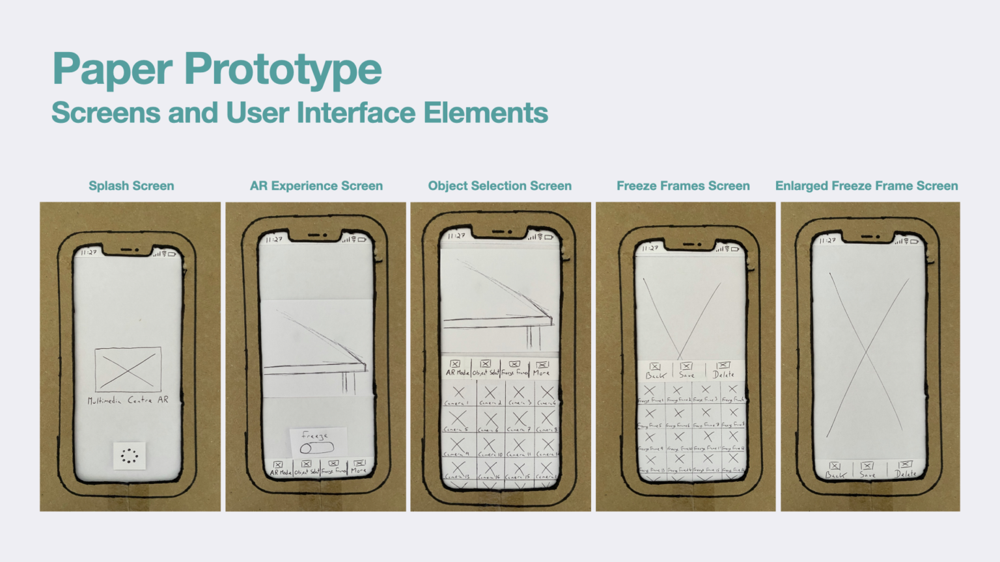
Prototype Development & Usability Testing
A higher‑fidelity prototype was created to test animation, graphics, and accessibility. Branding guidelines were followed, and testing was completed using an Adobe XD prototype on an iPhone.
Further testing revealed that users attempted to swipe objects to rotate them. Research confirmed this behaviour is common in AR/VR, so swipe‑to‑rotate was implemented.
Final Design Highlights & Lessons Learned
Functionality Highlights
- On‑demand training using virtual assets
- Training possible even when staff workload is high
- Design patterns leverage familiar AR behaviours
Usability & Accessibility Highlights
- Freeze Frame improves accessibility
- Gestural behaviours integrated based on user expectations


References
Herskovitz, J., Wu, J., White, S., Pavel, A., Reyes, G., Guo, A. and Bigham, J. (2020). Making Mobile Augmented Reality Applications Accessible. ASSETS ’20.
WebAIM (2012). Motor Disabilities – Types of Motor Disabilities.